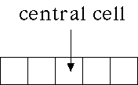

Cellular Automata and Fractal Evolution
Cellular Automaton Neighborhood
One-dimensional, N = 5.
The nbhd consists of the central cell, the two closest cells on its left, and the two closest cells on its right.

Return to
Neighborhoods
.